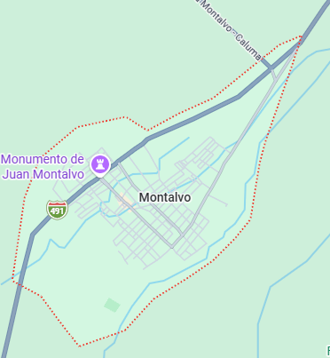

Reseña: Es el cantón ubicado más al sureste de la provincia, caracterizado por un relieve irregular que colinda con la provincia de Bolívar. Su clima suele ser ligeramente más fresco que el del resto de la llanura fluminense.
Urbanas: Montalvo.
Rurales: No cuenta con parroquias rurales creadas.
Tilapia frita o en maito, caldo de gallina criolla y fritada montalvina.
Complejos Turísticos y Piscinas: Cuenta con una gran cantidad de parques acuáticos privados y hosterías que aprovechan las vertientes naturales de agua de la cordillera.
Río Cristal: Hermoso balneario de aguas rápidas y cristalinas provenientes directamente de la Sierra.
Hostería El Castillo, Hotel Montalvo.
Eduardo Troncoso Rosas

30.000 habitantes.
